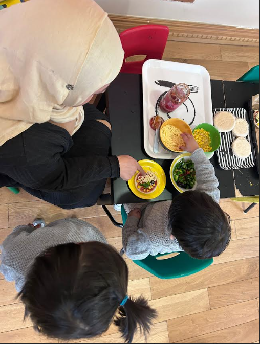

Why Your Key Person Matters
Before your child's first day, they are paired with a dedicated Key Person. This practitioner builds a close, loving bond with your child, ensuring they feel emotionally safe, supported, and confident during their nursery journey.
- Phased Settling-In: Gentle 1–2 week home-like transition schedule.
- Daily Communication: Real-time photo updates, meal logs, and milestone notes.
- Individual Learning Plans: Tailored Montessori work presentations matched to your child's sensitive periods.

100% Safeguarding Cleared
All staff undergo rigorous enhanced DBS checks, safeguarding training, and continuous background verifications.
Paediatric First Aid Certified
Every single practitioner on our nursery floor holds full 12-hour Paediatric First Aid qualification.
AMI & MCI Montessori Accredited
Our lead teachers hold prestigious diplomas from Association Montessori Internationale and Montessori Centre International.